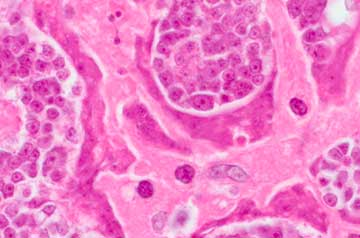
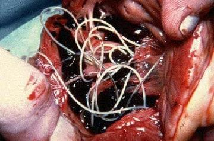
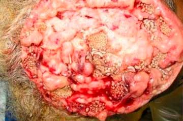
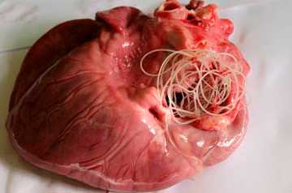

ОҒИЗДАН ЁҚИМСИЗ ҲИД КЕЛИШИ – ИЧАКЛАРДА ЖОЙЛАШГАН ПАРАЗИТ ВА ГИЖЖАЛАРДАН!
Оғзидан ёқимсиз ҳид келувчи ҳар бир одамни паразитлар ейди!
Агар оғиздан ёқимсиз ҳид келса – демак, унинг ички органларида миллионлаб паразитлар ин қурган экан.
Статистика маълумотларига кўра, 1 миллиарддан зиёд киши оғиздан ёқимсиз ҳид келишидан азият чекади! Сиз паразитлар ўлжасига айланганингизни сезмай қолишингиз мумкин.
Саволларингизга Герман Шаевич Гандельман жавоб беради
Доцент, тиббиёт фанлари номзоди – Тиббий паразитология ва биоэкология илмий-тадқиқот институтининг раҳбари. Молекуляр паразитологияга оид 60 дан зиёд илмий асар муаллифи. «Кимёвий ва биологик хавфсизлик» дастури доирасида 11 давлат шартномаси ва ИНТАСнинг лейшманиозларни молекуляр ташхислаш бўйича лойиҳалар ижрочиси. Иш тажрибаси: 30 йилдан ошиқ.
Тиббий паразитология ва биоэкология институтида оғиздан ёқимсиз ҳид келишининг янги сабабини аниқлашди: бу паразитлар билан зарарланишдир. Яқинда якунланган тадқиқот маълумотларига биноан, паразитлар ҳаётий фаолияти маҳсулотлари заҳарли бўлиб, ошқозонда чиритувчи бактериялар ривожланиши учун қулай муҳит яратади. Айнан шу сабабли паразитлар билан зарарланган одамларнинг оғзидан ёқимсиз ҳид келади.
Бугун шу хусусда РФ Тиббий паразитология ва биоэкология институти раҳбари Герман Шаевич Гандельман билан суҳбатлашамиз.
Мухбир: "Герман Шаевич, ассалому алайкум! Бош саволдан бошласам. Россия аҳолининг паразитлар билан зарарланиши бўйича биринчи ўринда турадими?"
Г. Ш. Гандельман: Ҳа. Бунга ёмон экология, маъмурлар фаолиятсизлиги ва одамлар дардига бепарволик сабаб бўлмоқда.
Мухбир: "Герман Шаевич, паразитлар билан зарарланиш ва оғиздан ёқимсиз ҳид келиши ўртасидаги боғлиқликка оид тадқиқот маълумотлари аниқми?"
Г. Ш. Гандельман: Яқиндаги тадқиқотлар кўрсатишича, оғиздан ёқимсиз ҳид келишига ошқозон ва жигар билан муаммолар ҳам сабаб бўларкан. Олимлар яна шуниям маълум қилишдики, бундай оддий симптомни назар-писанд қилмаслик ярамайди. Паразитлар билан зарарланиш деярли барча оғир касалликларни чақиради.
Г. Ш. Гандельман: Шахсан ўзим институтимиз тадқиқотларига тўла-тўкис ишонаман. Оғиздан ёқимсиз ҳид келиши жиддий касалликка айланади. Ўлимларнинг 92 фоизи паразитлар билан боғлиқ. "Табиий ўлимлар"нинг аксарияти - вужудимиздаги аъзолар ичида паразитлар фаолияти оқибатидир.
Мухбир: "Одатда паразит деганда оддий гижжаларни назарда тутишади, уларнинг оғиздан ёқимсиз ҳид келишига ва ҳатто инсон ўлимига қандай дахли бор?"
Г. Ш. Гандельман: Аслини олганда, инсон паразитлари - фақат гижжалар деб ҳисоблаш катта хато. Турли аъзоларда яшайдиган турли-туман паразитлар сони беҳисоб. Қолаверса, гижжалар ҳам, аниқроғи - гельминтлар ўта хавфли. Улар ичакларга шикаст етказиб, уларнинг чиришига ва алал-оқибат ўлимга олиб келади. Боз устига, ҳатто гельминтларни аниқлаш ва йўқ қилиш бирмунча мураккаб иш.
Улар билан бир қаторда, жигар, мия, ўпка, қон, ошқозонда яшайдиган минглаб паразитлар ҳам бор. Уларнинг қарийб ҳаммаси ўлимга олиб келади. Уларнинг бир қисми тажовузкорона таъсир қилиб, организмни ишдан чиқаради. Бир қисми эса сездирмай фаолият кўрсатади ва бора-бора шунақа кўпайиб кетадики, инсон бунга чидаёлмай ҳалок бўлади.
Шуни комил ишонч ила айта оламанки, қарийб барча одамлар паразитлар билан зарарланган. Шунчаки уларнинг аксариятини аниқлаш мушкул. Паразитлар билан зарарланиш асоратлари пайдо бўлганда эса, шифокорлар айнан шу асоратларни даволашга ҳаракат қилишади. Ҳатто тана ёриб кўрилганда ҳам паразитларни аниқлаш учун махсус таҳлиллар олиш лозим.
Жигар, мия, ўпка, қон, ошқозонда яшайдиган минглаб паразитлар ҳам бор. Уларнинг қарийб ҳаммаси ўлимга олиб келади. Ҳаммаси одатда оғиздан ёқимсиз ҳид келишидан бошланади.
Мухбир: "Сиз паразитлар билан зарарланишга оид аниқ мисоллар келтира оласизми?"
Г. Ш. Гандельман: Юзлаб мисол келтира оламан. Аммо паразитлар хавфлилигини тушунарли тарзда намойиш этувчи баъзилари ҳақида тўхталаман.
Биринчидан, аниқланишича, баъзи тасмасимон чувалчанглар саратонга олиб келади. Дарвоқе, одам эмас, балки айнан чувалчанглар саратонга учрайди. Аммо уларнинг хавфли ҳужайралари бутун организм бўйлаб ёйилиб, инсонни зарарлайди. Чувалчанг ғумбаклари ичаклардан одамнинг лимфа тугунларига тушиб қолганда, шундай ҳол юз беради. Оқибатда, улар саратон ўсмаларига айланади. Икки-уч ойга бормай ҳаммаси ўлим билан тугайди. Ўтган ҳафтадагина одамнинг бундай ўсмалардан ўлим ҳолати қайд этилди.
Сурат марказида одамга чувалчанг-паразитдан ўтган хавфли ўсма ҳужайраларини кўриш мумкин

СУРАТНИ КЎРСАТИШ 18+
Г. Ш. Гандельман: Яна бир кенг тарқалган ҳолат - инсон миясининг паразитлар билан зарарланишидир. Бу эса неврозларга, тез чарчашга, тажангликка ва кайфиятнинг кескин ўзгаришига олиб келади. Сўнгги босқичда эса, мия паразитларга тўлиб борган сари, жиддий касалликлар ривожланиб, оқибати ўлим билан тугайди.
Биз ёришларга оид фотоархив юритяпмиз, бунда аъзолардаги паразитлар аниқланган. Эътиборингизга бир нечта суратни ҳавола этамиз, аммо огоҳлантираман, улар ваҳимали. (Диққат! 18+)
Одамнинг олиб ташланган ўт қопидаги чувалчанглар:

СУРАТНИ КЎРСАТИШ 18+
Одам бош миясидаги саратон ўсмасини чақирган паразитлар:

СУРАТНИ КЎРСАТИШ 18+
Юрак тўхташига олиб келган чувалчанглар:

СУРАТНИ КЎРСАТИШ 18+
Г. Ш. Гандельман: Учинчи мисол - одам юрагининг паразитлар билан зарарланиши. Бу жуда кам тарқалган касаллик, деб ўйлашади. Аммо аслида юракдаги чувалчанглар тахминан 23 фоиз одамларда учрайди. Улар эрта босқичда мутлақо сезилмайди, уларнинг организмга салбий таъсири деярли йўқчалик. Аммо қанча кўп вақт ўтган сайин, чувалчангларнинг юракдаги фаолияти шунча кўзга ташланади. Айнан улар юрак хасталикларининг бош сабабчиси ҳисобланади, агар юрак тўхташи сабабли тўсатдан ўлиш ҳақида гапирсак, бундай ҳолларнинг қарийб 100 фоизи паразитлар улушига тўғри келади.
Мухбир: "Паразитлар билан зарарланиш яна нимаси билан хавфли?"
Г. Ш. Гандельман: Эркакларда паразитлар простатит, импотенция, аденома, цистит, буйраклар ва сийдик пуфагида қум ва тошлар чақиради.
Аёлларда тухумдонлар оғриғи ва яллиғланишини чақиради. Фиброма, миома, фиброз-кистоз мастопатия, буйрак усти безлари, сийдик пуфаги ва буйракларнинг яллиғланиши ривожланади. Турган гапки, терининг эрта қариши рўй беради, ажинлар пайдо бўлади, кўз ости солқийди, юз ва баданга сўгал ва папилломалар тошади.
Мухбир: "Паразитлардан қандоқ ҳимояланиш мумкин? Бирор таҳлиллар ёки дори-дармон борми?"
Г. Ш. Гандельман: Афсуски, бугунга келиб инсон ичидаги паразитларни ташхисловчи аниқ асбоб ва воситалар мавжуд эмас. Бу қисман паразитлар сони кўплиги (2000 турдан ортиқ), қисман эса уларни аниқлашнинг ўта қийинлиги билан изоҳланади. Россияда паразитларни тўлиқ таҳлил қилиш муолажаси фақат бир нечта жойдагина ишлайди ва жуда қиммат туради.
Вужудингизда паразитлар ин қургани ҳақида дарак берувчи илк симптомлар қуйидагича:
1. Оғиздан ёқимсиз ҳид келиши – асосий симптом;
2. Бадандаги папилломалар;
3. Аллергия (тошмалар, кўз ёшланиши, тумов);
4. Терида тошмалар пайдо бўлиши, унинг қизариши;
5. Тез-тез шамоллаш, ангина, бурун битиши;
6. Сурункали чарчоқ (қандай иш қилманг, дарров чарчаб қоласиз);
7. Тез-тез бош оғриқлари;
8. Қабзият ёки ич суриши;
9. Бўғим ва мушаклар оғриши;
10. Асабийчанлик, уйқу ва иштаҳа бузилиши;
11. Кўз остида қорамтир доғлар, кўз солқиши.
Г. Ш. Гандельман: Ҳеч бўлмаса битта симптом борлиги - 99% эҳтимоллик билан айтиш мумкинки,сизнинг танангизда паразитлар яшаяпти. Уларга қарши зудлик билан кураш бошланг!
Дорилар масаласи ҳам катта муаммо. Бугун паразитлардан халос бўлишга имкон берувчи ягона ишланма бор. У Россияда яратилган.
Бу "Антиглист" паразитларга қарши восита бўлиб, уни ҳозир акция бўйича бепул олиш мумкин. Антиглист бизнинг Паразитология институтимиз ва мустақил ёш олимлар гуруҳи иштирокида яратилган. Биз паразитларга қарши яна йигирматача восита устида ишладик. Аммо изланишлар вақтида айнан "Антиглист" энг самарали экани аён бўлди.
АНТИГЛИСТ ТАРКИБИ:
1 капсула таркиби бундай: қуруқ экстракт шаклидаги фаол моддалар – саримсоқ 100 мг, қовоқ уруғи 100 мг, оддий дастарбош 50 мг, кассия уруғи 50 мг, ковул 50 мг, андиз илдизи 50 мг, қора ёнғоқ 100 мг, ёрдамчи моддалар – крахмал, стеарат кальций.
Хусусан, саримсоқ таркибида 400 дан ортиқ фойдали компонентлар: A, C, E, K, B витаминлари, микроэлементлар: темир, фосфор, селен, рух ва марганец, фитонидлар, эфир мойлари ва аллицин бирикмаси бор. Улар иммунитетни барқарорлаштиради, овқат ҳазм қилишни яхшилайди, юрак фаолиятини бир маромда сақлайди, томирларни эластик қилади, модда алмашинувига (липидлар, углеводлар) ва қон таркиби ва хусусиятига ижобий таъсир кўрсатади.
Аллицин, эфир мойлари, кремний тузи организмда патоген микроблар, замбуруғ, лямблия ва гельминтлар ривожланишига тўсқинлик қилади, ичакларни зарарли моддалардан тозалайди.
Кассия уруғи таркибида анграгликозидлар, органик кислоталар, танин моддалари ва эфир мойлари, флавоноидлар, пектин, витаминлар, антрохинонлар бор.
Булар бирлашиб, йўғон ичак функциясини яхшилайди, доимий сафро ишлаб чиқаришини нормаллаштиради.
Ковул мевалари таркибида рутин, гликозидлар, сапонинлар, мирозин ферменти, шакар, йод, эфир мойлари, алкалоидлар, сапонинлар, рутин, клетчатка, микроэлементлар, витаминлар бор.
Андиз илдизи таркибида инулин, сапонинлар, қатронлар, танин моддалари, органик кислоталар, эфир мойлари мавжуд.
Қовоқ уруғи ўз таркибида оқсил, углевод, тўйинмаган ёғ кислоталари, аминокислоталар сақлайди, озуқа манбаи бўлиб, жигар, буйрак, ичакларни соғломлаштиради. Қовоқ уруғининг устки яшил қобиғи таркибидаги махсус модда (алкалоид туйон) ичакда патоген бактериялар ва гельминтлар ривожланиши учун салбий муҳит яратади.
Антиглист паразитлардан тозаловчи, дунёда ягона воситадир. Айнан шу сабабли халқаро дорихона тармоқлари ва фармацевтика компаниялари унинг кетидан қувмоқда. Бошқа антипаразитар препаратларга қиёсан, бу восита одамларни зарарлайдиган қарийб барча паразитларга қарши ишлайди. Ташхисот билан боғлиқ муаммоларни инобатга олганда, бу бутун организмни самарали тозалашга имкон беради. Одам қандай паразитлар билан зарарлангани ҳақида аниқ айтиб бўлмайди. Аммо Антиглист бош миядан тортиб то жигар ва ичакларда яшайдиган паразитларни йўқ қилади. Бугун мавжуд препаратлардан биронтаси бунга қодир эмас.
Антиглистнинг клиник синовлари
Синовлар ўтган йил охирида институтимиз негизида ўтказилиб, уларда жами 3289 киши қатнашди.
100% синалувчилар: Гельминтоз ва тухумлар йўқ қилиниши
91% синалувчилар: Меъда ости бези фаолияти ва ҳолати яхшиланиши
83% синалувчилар: Аллергик дерматит бартараф этилиши
92% синалувчилар: Гастрит, яра, диарея бартараф этилиши
98% синалувчилар: Камқонлик бартараф этилиши
100% синалувчилар: Оғиздан ёқимсиз ҳид келишининг бартараф этилиши
Мухбир: “Менимча, ўқувчиларимиз Антиглистни қаердан харид қилиш ҳақида маълумот олсалар яхши бўларди”.
Г. Ш. Гандельман: Ҳозир Антиглистни мамлакатимизнинг исталган фуқароси сотиб олиши мумкин!
Россия паразитологлар ассоциацияси воситани аҳолига беғараз асосда тарқатмоқда.
Воситанинг самарадорлигини ўзингиз текшириб кўринг!
Антиглист ИСТАЛГАН ОДАМГА ПОЧТА БЎЛИМИГА ЕТКАЗИБ БЕРИЛАДИ!
Мухбир: "Герман Шаевич, бунинг учун нима қилиш керак?
Г. Ш. Гандельман:
1. Чегирмалар ўйинида қатнашинг ва қуйидаги шаклни тўлдиринг.
2. Оператор қўнғироғини кутиб, воситани қайси манзилга етказиб беришни кўрсатинг.
3. 4-7 кундан сўнг почтага келиб, воситани олиб кетаверасиз.
Акция 2025 йил 9 февралдан 2025 йил 14 февралгача ўтказилади (худди шу даврда воситани олиш учун буюртманома қолдириш керак, сўнгра уни фақат оддий нархда сотиб олиш мумкин).
Мухбир: "Герман Шаевич, суҳбатимиз якунида ўқувчиларимизга қандай тилакларингиз бор?"
Г. Ш. Гандельман: Соғлиғингизни асранг! Сиз буни сезмасангиз ҳам, вужудингизда 97-98% эҳтимоллик билан паразитлар яшайди. Улар қон, ичак, ўпка ва бошқа исталган ерда бўлиши мумкин. Улар бизни ичимиздан емиради, бир йўла организмни заҳарлайди. Оқибатда ҳаётимиз 15-25 йилга қисқаради. Паразитларнинг инсон организмига салбий таъсири чақирган тўсатдан ўлимлар ҳақида айтмаса ҳам бўлади.
ДИҚҚАТ: Ҳозир Антиглистни акция доирасида БЕПУЛ олиш мумкин. Бунинг учун дверлардан бирини очиб, 2025 йил 14 февралгача қуйидаги буюртма шаклини тўлдириб чегирма олиш керак. Акция доирасидаги маҳсулотлар сони чекланган.
ТОПИНГ-ЧИ, 100% ЧЕГИРМА ҚАЙСИ ДВЕРЬДА?
Қайси эшик ортида 70% чегирма яширинган?
Танланг ва 70% чегирмани топинг


Танланган эшикни очиб, 70% чегирманинг жойини топинг.
Контактлар учун форма
Бу форма кейинги чақирув/қайта алоқа учун. Толдиринг:
Шарҳлар
Альфира Булатова, 53 ёш
14 февраля 2025
Воситани олдим. Беш кундан бери ичяпман, ичакларимдан шунақа нарсалар чиқдики...
Gulmira Zayirzade, 53 ёш
14 февраля 2025
Бу воситани қаерда буюртириш мумкин?
Gulsevar Habibullayeva, 50 ёш
14 февраля 2025
Юқорида буюртма шакли жойлашган, уни тўлдиринг ва сизга қайтиб қўнғироқ қилишади.
Юлдошали Солиев, 65 ёш
14 февраля 2025
Уч кун аввал олдим. Ёрдам беради, деган умиддаман!
Фаиз Махмудов, 61 ёш
14 февраля 2025
Мен ҳам буюртирдим. Бир ҳафта давомида келтириб берамиз, деб ваъда беришди.
Альбина Иванова, 38 ёш
14 февраля 2025
Кўпдан бери бош оғриши ва оғиздан ёқимсиз ҳид келишидан азият чекаман. Антиглист ичувдим, ўтиб кетди.
Светлана Волкова, 54 ёш
14 февраля 2025
Онам учун буюртирдим, кеча келтиришди. Ҳаммаси қулай, курьер тўғри уйимизга олиб келди. Ҳозир онам даволаняпти.
Нозима Собитжонова, 56 ёш
14 февраля 2025
Эрим икковимиз шу имтиёзлар йўлга қўйилган заҳоти буюртирдик. Иккаламиз курс ўтаяпмиз ва кундан кунга яхшиланяпмиз. Уйқумиз ҳам яхшиланди.
Алексей Виноградов, 49 ёш
14 февраля 2025
Восита тамом бўлмасидан буюртма қолдирдим.
Надежда Орлова, 53 ёш
14 февраля 2025
3 кунда почта орқали жўнатишди, қути ҳолати аъло, эзилмаган, бир ҳафтадан бери ичяпман, натижалар бор!
Мария Фролова, 52 ёш
14 февраля 2025
Наҳотки натижалар шундай зўр бўлса? Қани бир синаб кўрай-чи.
Набижонов Бехзодбек, 54 ёш
14 февраля 2025
Мен ҳам буюртирмоқчиман. Олганимдан кейин натижаларни ёзиб юбораман.